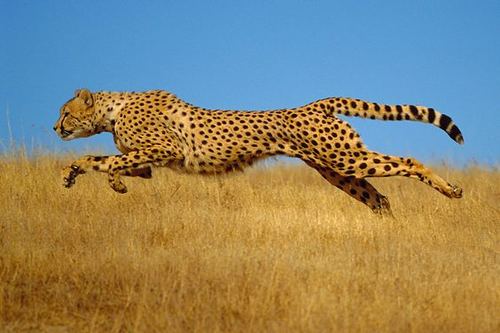

Cheetah

Cheetah adalah salah satu hewan tercepat di darat. Mereka memiliki tubuh yang ramping dan kaki yang panjang. Cheetah dapat mencapai kecepatan hingga 112 km/jam dalam sprint singkat. Mereka juga memiliki pola bintik unik yang membantu dalam menyembunyikan diri mereka di padang rumput Afrika.
Untuk informasi lebih lanjut tentang cheetah, Anda dapat mengunjungi halaman Wikipedia tentang Cheetah.